FILCO：面向 DNN 加速的具备实时可重构能力的灵活组合架构
该论文针对端到端应用中 DNN workload 在矩阵形状与模型规模上差异巨大（模型内与模型间 variance），导致固定数据流加速器与静态资源划分设计出现 padding 开销、吞吐骤降的问题，提出可在运行时实时重构的灵活组合架构 FILCO。FILCO 在 AMD Versal 平台上将片上资源组织为 Compute Unit（AIE 阵列）、Flexible Memory Unit（FMU）与 IO Manager，通过带动态循环边界的 AIE 编程实现计算 tile 运行时可变，通过 1-D 寻址 double-buffer 实现片上存储视图与功能可重构，并以区分静态/运行时参数的指令集统一控制。框架侧提出两阶段 DSE：逐层搜索最优运行时数据流后，将调度形式化为 MILP，并用 Genetic Algorithm 启发式加速大规模搜索。在 VCK190 上，FILCO 相对 CHARM 与 RSN 在多样 workload 上取得 1.3x~5x 吞吐与硬件效率提升；单 AIE 在操作数规模变化超 6x 时仅损失约 5% 效率；大任务集下 GA 10 分钟内可得可用设计点而 MILP 1 小时后仍无有效解。
端到端任务需执行计算与通信模式差异巨大的多种 DNN（如 ADS 中的 MLP、DeiT、MLP-Mixer、PointNet），存在 intra-model 与 inter-model 形状差异。固定数据流加速器（如 CHARM 的多种子静态设计）在处理小尺寸或高多样性 workload 时必须将操作数矩阵 padding 到固定片上 buffer 形状，导致通信与计算开销、吞吐骤降；且资源划分须在编译期确定、缺乏可重构性。Overlay 类架构（如 RSN）虽可灵活映射操作数矩阵，但受限于静态片上矩阵形状与跨计算核固定的计算 tile 尺寸，灵活性粒度不足。
提出 FILCO 架构与配套框架。数据平面由 CU（含 AIE 阵列、CU Buffer、Mesh Manager）、FMU 与 IO Manager 组成，FMU 与 CU 间采用全连接 stream 拓扑；控制平面由 Instruction Generator 从片外加载并按指令头分发指令。三项硬件方法：(1) Flexible Computation Parallelism——将 2x8x8 分块矩阵乘打包为原子操作，用动态循环边界实现运行时可变 tile 尺寸，规避每 AIE 仅 16KB 指令存储的限制；(2) Flexible On-chip Memory View——FMU 采用 1-D 寻址 double-buffer，按指令将同一缓冲解释为不同形状，消除 padding；(3) Flexible On-chip Memory Functionality——FMU 存操作数或结果的功能在运行时可配置，只要总数据量不超资源约束即可最大化复用。配合区分静态/运行时参数的指令集，以及两阶段 DSE：Stage 1 逐层暴力搜索最优运行时数据流并记录延迟表，Stage 2 将映射与调度问题形式化为 MILP 保证最优性，并提出依赖感知解码的 Genetic Algorithm 启发式以扩展到大规模设计空间。
相比 CHARM 与 RSN，在多样 workload 上吞吐与硬件效率提升 1.3x~5x
单 AIE kernel：可支撑 MM 尺寸从 14x24x16 到 32x32x32（操作数变化超 6x）而仅损失约 5% 效率；静态 AIE 编程在小尺寸 MM 因 padding 性能大幅下降
大 MM 低多样性 workload 上相对 RSN 与 CHARM 取得 1.3x 吞吐提升；小 MM 高多样性 workload 上提升超过 5x
BERT-32~BERT-512 端到端评估：完整特性（FP+FMF+FMV）配置在小模型上通过可变 buffer 视图避免 padding 造成的带宽浪费，大模型上取得优于 RSN/CHARM 的设计点
DSE 搜索效率：小任务集（50 层 x 50 候选）GA 与 MILP 最优性差距约 3%；大任务集（50 层 x 5000 候选）GA 在 10 分钟内产出可用设计点，MILP 1 小时后仍无法得到有效解
实验平台与工具：VCK190（PL 150MHz、AIE 1GHz）、Vitis 2023.1、DSE 使用 CPLEX 与 Pymoo
区别于固定数据流加速器（CHARM、DNNExplorer、SSR、EQViT、FlightVGM/FlightLLM、Herald 等）需为每种执行模式显式设计数据通路并依赖编译期资源划分，也区别于 overlay 架构（RSN、InTAR、FEATHER、NSFlow）灵活性粒度不足：RSN 的计算并行度静态、片上矩阵形状固定，FILCO 将运行时可变计算 tile（动态循环边界而非有限指令块）、可变片上存储视图（1-D 寻址重解释）与可变存储功能三者结合，以区分静态/运行时参数的指令集统一控制，在不重载 bitstream 的前提下实时匹配多样 workload，并用两阶段 MILP+GA DSE 自动求取设计点。
相关度级别：medium
命中能力域：2.1 IP 架构与微架构
理由：论文属于 DNN 加速器架构研究，落地平台为 AMD Versal ACAP，与团队内存/互连 IP（LPDDR/HBM4/UCIe 等）的产品方向不直接重合，也未涉及团队的 RTL 实现、UVM 验证、形式化或仿真加速技术栈，故不评为 high。但其方法学与 2.1 域中 'workload-driven 性能建模' 与 '面向 PPA 的架构权衡' 高度同构：两阶段 DSE（逐层运行时参数搜索 + MILP 调度形式化 + GA 启发式）是一套可迁移的架构空间探索与设计点选择方法；FMU 的 1-D 寻址可变视图、cyclic/block bank 划分避免冲突、double-buffer 等片上缓冲组织方式，以及静态/运行时参数分离的配置接口设计，对 IP 内部缓存与配置通路架构有借鉴价值，因此评为 medium。
建议动作：作为方法参考存档
arXiv:2604.07523v2 [cs.AR] 2026年4月10日
Xingzhen Chen 布朗大学 美国普罗维登斯 xingzhen_chen@brown.edu Jinming Zhuang 布朗大学 美国普罗维登斯 jinming_zhuang@brown.edu Zhuoping Yang 布朗大学 美国普罗维登斯 zhuoping_yang@brown.edu Shixin Ji 布朗大学 美国普罗维登斯 shixin_ji@brown.edu
Sarah Schultz 布朗大学 美国普罗维登斯 sarah_schultz2@brown.edu
随着深度神经网络（DNN）使能应用的发展，在异构计算平台上针对多样化工作负载实现高硬件资源效率并非易事。已有工作讨论了专用架构以实现最大的资源效率。然而，在各类多样化工作负载中，硬件与工作负载之间的失配始终存在。另一些工作讨论了可针对不同工作负载动态切换数据流的叠加架构（overlay architecture）。然而，这些工作仍受限于灵活性粒度，并导致大量资源低效。
为解决这一问题，我们提出了一种灵活组合架构 FILCO，它能够高效匹配多样化工作负载，以实现最优的存储与计算资源效率。FILCO 可实时重配置，并能灵活组合为单一统一加速器或多个独立加速器。我们还提出了 FILCO 框架，其中包括一个带有两阶段设计空间探索（DSE）的解析模型，可获得最优设计点。我们还在 7nm AMD Versal VCK190 开发板上对 FILCO 框架进行了评估。与已有工作相比，我们的设计在各类多样化工作负载上可实现 1.3×∼5× 的吞吐量与硬件效率提升。
在许多实际应用中，一个端到端任务必须执行多种深度神经网络（DNN），这些网络在计算模式和通信模式上具有根本不同的特性。然而，现代加速器通常采用针对特定 DNN 类型定制的专用数据流，导致在处理需求多样的工作负载时出现显著的性能下降。例如，在自动驾驶系统（ADS）中，有用于多层感知机分类或回归的 MLP [26]、用于图像分割的 DeiT [23]、用于图像分类的 MLP-Mixer [21]，以及用于三维点云处理的 PointNet [19]。稠密矩阵乘（MM）运算看似计算密集型，但较小的矩阵维度可能使瓶颈转移到通信上。其维度在层与层之间也变化剧烈，导致较大的模型内形状差异。此外，由于不同子任务需要不同的精度水平，会部署不同类型和规模的 DNN，从而导致模型间形状差异。
本文已被第 63 届 ACM/IEEE 设计自动化会议（DAC）录用。
Zheng Dong 韦恩州立大学 美国底特律
dong@wayne.edu Weisong Shi 特拉华大学 美国纽瓦克 weisong@udel.edu Peipei Zhou 布朗大学 美国普罗维登斯 peipei_zhou@brown.edu
如图 1 所示，我们对若干面向深度神经网络（DNN）模型的现有加速器进行了剖析，并选择了三个具有不同多样性程度的模型。在该示例中，我们选择 MLP [26] 来代表模型内多样性较低的 DNN，因为它主要由形状接近方形的矩阵乘法层构成。相比之下，DeiT [23] 是一种基于 Transformer 的模型，由于其注意力层和前馈层形状各异，具有中等程度的多样性。PointNet [19] 则因其 T-Net 架构而表现出最高的多样性。同一类型但规模不同的模型之间也存在工作负载多样性。例如，MLP-L 和 MLP-S 具有相似的架构，但由于模型间的差异而表现出高度的多样性。我们还对不同规模的 MLP、DeiT 和 PointNet 模型进行了性能剖析，以展示其应对模型间多样性的能力。CHARM-1 是 CHARM [35] 中的一种整体式设计，它充分利用了 Versal 平台 [2] 上的片上资源。根据剖析结果，CHARM-1 在 MLP-L 模型上能够实现高吞吐量，因为它对大规模且非多样化的矩阵乘法（MM）实现了高效的资源利用。然而，当工作负载切换到多样性程度更高的模型（DeiT-L）或规模更小的模型（MLP-S）时，吞吐量会迅速下降 ( 1 ○ )。尽管 CHARM-1 充分利用了资源，但在执行规模较小且多样化的工作负载时，它必须将操作数矩阵填充到固定的片上缓冲区大小，从而引入大量通信和计算开销。设计两个不同的加速器以适应多样化的操作数形状可以是一种解决方案，如 CHARM-2 和 CHARM-3 所示。从剖析结果来看，这种设计方法能够在模型规模更小、多样性程度更高的情况下实现平稳的性能下降 ( 2 ○ )。然而，由于它们为小型加速器重新分配了一小部分资源，CHARM-2 和 CHARM-3 在大型且非多样化的模型（MLP-L）上无法达到与 CHARM-1 同样高的吞吐量。由于资源划分必须在运行前确定且缺乏可重配置性，这种权衡总是发生在一系列静态加速器设计中。
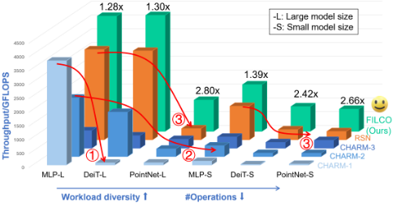
Xingzhen Chen、Jinming Zhuang、Zhuoping Yang、Shixin Ji、Sarah Schultz、Zheng Dong、Weisong Shi 和 Peipei Zhou
为了充分释放对高度多样化工作负载的灵活性，在计算侧与通信侧同时探索灵活性与可重构性至关重要且并非易事。在计算侧，这要求设计具有运行时可灵活变化的计算瓦片（tile）尺寸的计算逻辑，以消除在多样化工作负载中启动每个计算核心时的额外开销。在通信侧，为了避免不必要的片外访问，需要设计一种灵活的片上存储器，其可被配置为存储多种操作数形状而不产生额外的填充（padding）开销。此外，操作数矩阵与片上存储器之间的灵活映射对于改善工作负载与底层硬件之间的匹配至关重要。为应对这些挑战，我们提出了 FILCO，一种面向深度神经网络（DNN）加速、具备实时可重构性的灵活组合架构。我们将我们的贡献总结如下：
已有工作 [16] 尝试通过为专用工作负载实例化多个子加速器来解决这一问题，但它们仅支持有限的数据流，且缺乏针对不同工作负载的定制化。其他已有工作则尝试以 overlay（覆盖）的方式解决该问题，例如 RSN [24]。由于 RSN 能够将操作数矩阵灵活地映射到片上缓冲区，并为多样化工作负载拼接计算瓦片，因此它可以在一定程度上缓解这一问题。然而，RSN 受限于其静态的片上矩阵形状以及跨计算核心固定的计算瓦片尺寸。因此，只有当模型规模较大且多样性程度保持相对较低时，它才能维持高效率。如图 1 3 ○ 所示，从 MLP-L 到 DeiT-L，RSN 能够比 CHARM 维持更好的吞吐量，但当模型规模变小且工作负载多样性增加时，RSN 的性能会出现急剧下降。
在本节中，我们首先在 2.1 节介绍 FILCO 架构的总体概述。然后，我们在 2.2 节、2.3 节和 2.4 节中讨论所提出的三种硬件方法。在 2.5 节中，我们阐述 FILCO 中的控制流与指令集。
FILCO 硬件架构的总体概览如图 2 所示。该架构主要由数据平面和控制平面组成：数据平面负责计算与数据搬运，控制平面负责管理指令生成与执行调度。在数据平面中，我们将片上资源划分为计算单元（CU）、灵活存储单元（FMU）和 IO 管理器（IOM）。每个计算单元配备一个 AI 引擎（AIE）阵列、一个 CU 缓冲区（CU Buffer）和一个 Mesh 管理器（Mesh Manager），负责处理计算密集型工作负载。灵活存储单元通过在可编程逻辑（PL）上分配片上缓冲区来挖掘数据复用。此外，IO 管理器负责处理 FMU 与片外存储器之间的数据通信。数据平面中每个单元的执行均由 FILCO 提出的指令集控制。在控制平面中，指令生成器（Instruction Generator）从片外指令存储器（Instruction Memory）中加载指令，并根据指令头（instruction header）将其分派至各个功能单元。每个功能单元首先接收并译码指令，然后根据指令中的控制信号执行该指令。
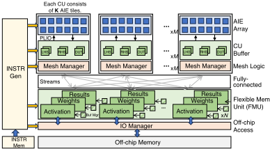
为了同时维持片外与片上带宽，需要进行合理的缓冲区分区以避免 bank 冲突。对于片外访问，我们采用循环分区（cyclic partitioning）的宽端口宽度；而对于片上，则使用块分区（block partitioning）来匹配 AIE 的分块 MM 执行并防止片上缓冲区冲突。为了解耦 AIE 与 IO 管理器之间的分区冲突，我们引入了包含 CU 缓冲区与 FMU 的分层片上存储器。在 FILCO 中，CU 缓冲区的容量设置为与最大 AIE tile 相匹配，并采用块分区；而 FMU 的容量取决于可用的片上缓冲区，并针对宽端口采用循环分区。接下来，我们将在以下各节中详细介绍硬件设计方法。
在我们提出的 FILCO 架构中，共有 N 个 FMU 和 M 个 CU，每个 CU 由 K 个 AIE 组成。各功能单元通过多级流式（streaming）层次结构相互连接。在片外通信方面，我们设计了 IO 管理器，使不同的 FMU 能够访问统一的存储器空间。在片上通信方面，我们在 FMU 与 CU 之间采用全连接的流（stream）拓扑，以实现能够适应多样化工作负载的最大灵活性。在每个 CU 内部，设有一个 Mesh 管理器，负责处理 mesh-in 与 mesh-out 的逻辑控制。
在 FILCO 设计中，我们将计算密集型工作负载分配给 AIE。为了在不重新加载比特流（bitstream）的情况下在多样化工作负载上实现高效率，我们提出了一种灵活的 AIE 编程方法，该方法可在运行时于不同执行模式之间切换，以实现灵活的并行模式。
现有工作要么使用静态 AIE 指令以获得峰值效率，要么使用有限的指令块进行模式切换。然而，静态指令会导致在多样化工作负载上的性能下降。如图 3(b) 所示，计算分块（tile）的大小在迭代过程中保持固定。虽然大型工作负载能够充分利用并行性
FILCO：面向 DNN 加速的具备实时可重构性的灵活组合架构
1 void singleAIE_kernel(input_buffer& in0, input_buffer& in1, output_buffer& out0) { 2 // 从本地缓冲区加载指令向量 3 vector<3> Instr = load_v<3>(in0); 4 // 指定灵活的循环边界 5 int bound_i = Instr.get(0); 6 int bound_k = Instr.get(1); 7 int bound_j = Instr.get(2); 8 // 主循环 9 for ( int i=0; i < bound_i; i++){ 10 for ( int j=0; j < bound_j; j++){ 11 for ( int k=0; k < bound_k; k++){ 12 //2x8x8 的原子操作 13 ...}}}}
(a)AIE 内核伪代码
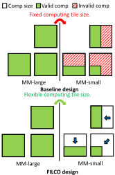
(b)灵活的计算分块大小
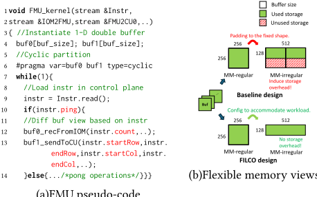
(a)FMU 伪代码
（绿色块），较小的工作负载则需要填充（padding），导致大量无效计算（红色块）。设计有限的指令块有助于缓解无效计算，但在实际应用中存在显著局限。每个 AIE 中仅有 16KB 的指令存储器，而以 32x32x32 的分块大小计算矩阵乘法（MM）所需的指令大小超过 4KB。
在 FILCO 中，为了提高灵活性和效率，我们将每个 2×8×8 的分块矩阵乘法打包为一个原子操作，以保持较高的超长指令字（VLIW）效率（图 3 中的第 13 行），并定义了具有动态边界的嵌套 for 循环，以实现灵活的分块大小（第 10 ∼ 12 行）。循环边界通过输入端口提供（第 3 ∼ 7 行）。在运行时，通过发出不同的指令来配置分块大小，如图 3(b) 所示。对于大型工作负载，调整外层循环边界以充分利用计算资源。对于小型工作负载，重构会减小分块大小以匹配工作负载，从而显著减少不必要的计算（FILCO 中的绿色块）。
如图 4(b) 所示，现有加速器通常使用与操作数维度相匹配的 N 维片上缓冲区。然而，这种静态缓冲区视图在实践中会导致面向多样化工作负载的存储利用率低下。例如，如图 4(b) 中的基线设计所示，假设我们有一个大小为 256x256 的二维矩阵需要存储在片上。在现有的静态加速器设计中，它们会实例化一个 256x256 的静态缓冲区形状以完美匹配工作负载形状，这在某些静态工作负载下可以实现高效率（绿色块）。然而，当需要处理多样化工作负载时，例如 128x512 的矩阵形状，这种静态设计方法会引入大量存储开销，并且由于不必要的填充（padding）仅能达到 50% 的效率（红色块）。实际上，这两个不同的矩阵具有相同的数据大小，完全可以存储在同一个缓冲区中。
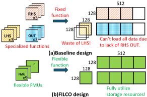
因此，提出一种能够在不同缓冲区视图之间切换的灵活片上存储器可以提升效率。如图 4(a) 所示，FILCO 实例化了多个并行的 FMU，每个 FMU 包含一个一维寻址的双缓冲区和一个指令译码器（图 4 中的第 5 行）。当系统启动时，每个 FMU 实例同时开始执行，并从控制平面译码指令（第 9 ∼ 11 行）。在接收阶段，FMU 仅接收由指令确定的给定数量的元素（第 14 行）。在发送阶段，FMU 译码分块信息以便通过一维索引对其进行寻址，并通过预先路由的数据流将其发送到正确的下游功能单元（第 15 行）。在启用这种灵活的片上存储器视图之后，FMU 可以被视为多种不同的形状以完美匹配工作负载，从而能够大幅减少通信开销并提高存储效率。
为了最大化片上存储器的复用，FILCO 引入了具有灵活存储器分配能力的 FMU。与以往在编译时静态分配权重缓冲区和激活缓冲区的设计不同，FMU 可以在运行时被动态配置，以支持多样化的工作负载。在实际应用中，MM 中的工作负载可能存在某一维度远大于其他维度的情况。静态缓冲区分配无法高效地处理这种情况，因为较大的维度需要为某些操作数提供更多存储空间，从而超出缓冲区限制并导致数据无法完整加载（图 5 (a)）。在 FILCO 中，为了避免为某一特定操作数指定缓冲区所带来的限制，我们提出的 FMU 能够根据控制指令被配置为针对操作数或结果的不同功能。如图 2 所示，我们使用预先路由的数据流将每个 FMU 实例与 IO Manager 和 CU 相连，以构建灵活的数据流平面。每个 FMU 都拥有一个独立的指令译码器，可根据指令进行配置。对于多样化的工作负载，只要操作数矩阵和结果矩阵的总数据量不超过图 5 (b) 中的资源约束，FILCO 就能够最大化数据复用。
在本节中，我们详细阐述 FILCO 的控制流与指令集设计。FILCO 区分静态参数与运行时参数。静态参数在编译之前即已固定，例如 FMU/CU 的数量与容量，以及 CU 内部的 AIE 连接。运行时参数则可在执行时通过指令译码进行配置。例如，FMU 能够适应不同的数据规模，其模式可通过译码几个字节的指令来切换。因此，一套能够实现运行时可配置性的指令集对于支持多样化工作负载至关重要。
Xingzhen Chen, Jinming Zhuang, Zhuoping Yang, Shixin Ji, Sarah Schultz, Zheng Dong, Weisong Shi, and Peipei Zhou
| Function Unit | Instruction Items |
|---|---|
| Instr Generator | is_last, des_unit, valid_length |
| IOM Loader | is_last, ddr_addr, des_fmu, M, N, start_row, end_row, start_col, end_col |
| IOM Storer | is_last, ddr_addr, src_fmu, M, N, start_row, end_row, start_col, end_col |
| FMU | is_last, ping_op, pong_op, src_cu, des_cu, count, start_row, end_row, start_col, end_col |
| CU | is_last, ping_op, pong_op, src_fmu, des_fmu, count |
| Function Unit | Instruction Items |
表 1 列出了不同功能单元的指令集。总体而言，Instruction Generator 从片外存储器加载指令头，其中包含指令序列中的有效指令长度以及目标单元。IO Manager 根据指令给出的 DDR 地址，通过发出大突发长度（burst length）的 AXI 事务来实现高 DDR 带宽。FMU 利用指令所提供的正确的 src/des 单元以及一维（1-D）寻址控制信息来收集（gather）和分散（scatter）数据，从而最大化片上数据复用。CU 执行计算操作，负责从正确的 FMU 加载操作数并将结果存储到正确的 FMU，同时实现高计算资源效率。
在本节中，我们首先在第 3.1 节介绍 FILCO 框架概述以及所提出的两阶段设计空间探索（DSE）。我们在第 3.2 节将 DSE 问题形式化为混合整数线性规划（MILP）表述以保证最优性。为减少搜索时间，我们在第 3.3 节提出一种基于遗传算法的启发式方法。
图 6 展示了 FILCO 框架的概览。FILCO 以 DNN 模型、平台信息和 DDR 剖析（profiling）结果作为输入。在完成自动化优化流程和代码生成后，FILCO 通过启动后端编译器生成二进制文件。在第一阶段，Runtime Parameter Optimizer 对每一层执行穷举搜索，以找到最优的运行时数据流，以及在 FMU 和 CU 约束下具有最优延迟的表格。在第二阶段，Schedule Optimizer 基于第一阶段记录的表格搜索最优的调度时间线，同时保证资源需求始终处于硬件资源约束之内。经过两阶段 DSE 优化后，FILCO 生成一个有效的调度以及针对每个 DNN 层的定制化数据流。随后，Code Generator 和 Instruction Generator 基于调度时间线和所记录的运行时数据流信息，为后端编译器生成 HLS 代码和指令序列。
FILCO 提出了一种两阶段优化算法来求解映射与调度相耦合的问题。它通过穷举所有可能的层到加速器候选方案来保证最优性，然后构建一个混合整数线性规划（MILP）来求解调度阶段。在第一阶段枚举出所有可能的映射候选之后，FILCO 中的调度优化流程可以形式化为如下问题 [5, 34]：给定一个工作负载的有向无环图（DAG），每个节点代表一个层（ 𝐿 𝑖 ），每条边代表两个层之间的依赖关系（若 𝐿 𝑗 依赖于 𝐿 𝑖 ，则 𝑃 𝑖,𝑗 = 1）。对于第 i 个层，存在多种候选执行模式；对于第 k 种模式，Runtime Parameter Optimizer 记录所需的 FMU 数量（ 𝑓 𝑖,𝑘 ）、所需的 CU 数量（ 𝑐 𝑖,𝑘 ）、最优运行时参数以及最优延迟（ 𝑒 𝑖,𝑘 ）。在平台资源约束方面，平台总共有 𝐹 𝑚𝑎𝑥 个 FMU 和 𝐶 𝑚𝑎𝑥 个 CU。我们的 MILP 形式化旨在最小化总体执行时间，同时保持应用程序的依赖关系，并确保硬件利用率始终处于资源约束之内。
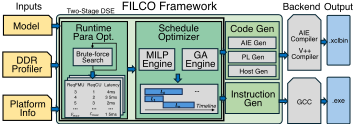
在一个可行的调度解中，每个层 𝐿 𝑖 仅以一种确定的模式执行，因此，我们有
∀(
𝑖, 𝑗
我们定义决策变量如下：𝐴 𝑖,𝑚 和 𝐵 𝑖,𝑚 是二元变量，当 𝐿 𝑖 分别使用第 m 个 FMU 或 CU 时，其值为 1；𝑀 𝑖,𝑘 也是二元变量，当 𝐿 𝑖 以第 k 种模式执行时，其值为 1；𝑆 𝑖 和 𝐸 𝑖 分别表示层 𝐿 𝑖 的开始时间和结束时间。在定义决策变量之后，我们推导目标函数和约束条件。
) ∈
对于 𝑃 𝑖,𝑗 = 1 的两个相邻层，调度时间线应满足数据依赖约束，即 𝐿 𝑗 的开始时间应晚于 𝐿 𝑖 的结束时间，而 𝐿 𝑖 的结束时间是其开始时间加上所选执行模式的延迟：1：
𝐷𝐴𝐺,𝑃
𝑖,𝑗
=
𝑗
≥
𝑖
对于 𝑃 𝑖,𝑗 = 0 的两个非相邻层，由于每个 FMU 或 CU 一次只能执行一个层，如果两个层被分配到同一个 FMU 或 CU 上，它们在时间线上的执行不应重叠。为了表示重叠条件，我们定义一个二元变量 𝑂 𝑖,𝑗 ，其中
为了对 MILP 形式化中的条件约束进行线性化，我们引入一个足够大的整数 𝜙 ，并将约束改写为线性形式。
根据 𝑂 𝑖,𝑗 的定义，如果 𝐿 𝑖 和 𝐿 𝑗 的调度在时间线上重叠，即 𝑆 𝑖 < 𝐸 𝑗 且 𝑆 𝑗 < 𝐸 𝑖 ，则 𝑂 𝑖,𝑗 = 𝑂 𝑗,𝑖 = 1。因此，对于占用同一 FMU 或 CU 且 𝑃 𝑖,𝑗 = 0 的任意层对，我们有
如果 𝐴 𝑖,𝑚 + 𝐴 𝑗,𝑚 + 𝑂 𝑖,𝑗 + 𝑂 𝑗,𝑖 > 3，则意味着 𝐴 𝑖,𝑚 = 1、𝐴 𝑗,𝑚 = 1、𝑂 𝑖,𝑗 = 1、𝑂 𝑗,𝑖 = 1。根据 𝐴 𝑖,𝑚 和 𝑂 𝑖,𝑗 的定义，对于层对 𝐿 𝑖 和 𝐿 𝑗 ，两者都被分配到第 m 个 FMU 上，且它们的调度相互重叠，这与资源约束相冲突。
FILCO：面向深度神经网络（DNN）加速的具备实时可重构性的灵活组合架构
为了满足每个候选模式的资源需求，我们应当保证所使用的 FMU 或 CU 之和等于所分配的 FMU 或 CU：
联立公式 1-6，我们可以将 FILCO DSE 中的调度优化流程形式化为一个混合整数线性规划（MILP）问题。
两阶段优化流程的主要挑战在于调度所面临的极其庞大的设计空间。例如，仅枚举候选模式选择的复杂度即为 𝑂 ( 𝑚 𝑛 )，其中 𝑚 是候选模式的数量，𝑛 是工作负载 DAG 中的层数。为了解决这一问题，我们为 FILCO DSE 中的调度优化器（Scheduling Optimizer）提出了一种基于遗传算法（Genetic Algorithm）的启发式搜索。在我们的遗传算法中，我们首先将决策变量编码为一条染色体，并用编码后的染色体初始化种群。然后我们设定最大迭代次数，在每次迭代中，种群中的每条染色体通过交叉和变异生成新一代。随后评估子代染色体的适应度得分，保存适应度值最优的那条染色体，并迭代进入下一代。
假设存在一条子代染色体，其编码如图 7(a) 所示，工作负载 DAG 如图 7(b) 所示。根据数据依赖关系，我们可以将 𝐿 0 和 𝐿 1 追加到图 7(c) 中的 Resolved List 中，然后搜索具有较小染色体编码 Encode[ 𝑖 ] 的层。在本例中，Encode[1] 小于 Encode[0]，因此我们将 𝐿 1 追加到 Schedule Order List 中。接着我们迭代地检查依赖解除情况，并追加具有较小 Encode[ 𝑖 ] 的层，从而生成完整的 Schedule Order List。然后，我们按照图 7(d) 所示的顺序开始在时间线上调度各层，以探索资源约束下的并行执行。在生成调度时间线后，我们可以得到该染色体的完工时间（makespan）并评估其适应度，保留适应度最优的染色体，并迭代进入下一代。
在 FILCO 框架中，每个设计点被定义为一条包含 2 𝑁 个决策变量的染色体，其中 𝑁 等于层数。前 𝑁 个变量定义为 Encode[N]，是 0 到 1 之间的实数；后 𝑁 个变量定义为 Candidate[N]，是 0 到 (#Can - 1) 之间的整数，其中 #Can 是可能的执行候选的数量。在交叉和变异阶段，我们采用随机选择策略。在解码和评估阶段，我们采用依赖感知的解码方法，以确保依赖关系得到解除。
在本节中，我们首先在 4.1 节中展示单个 AI 引擎（AIE）的效率，并在 4.2 节中设计一系列矩阵乘法（MM）工作负载，以展示 FILCO 在多样化工作负载上的性能鲁棒性。我们还在 4.3 节中针对从 BERT-32 到 BERT-512 的端到端吞吐量开展了消融实验。我们在 4.4 节中对我们的设计空间探索（DSE）算法进行评估。对于基线工作，我们应用 CHARM 框架来获得实验结果，并且我们构建了一个自研的
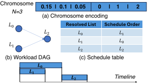
(d) 调度时间线
图 7：遗传算法（GA）解码器的示意图。
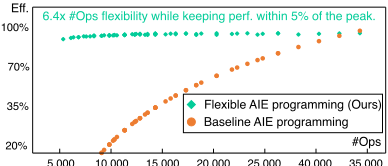
5,000
10,000
15,000
20,000
25,000
40,000
35,000
用于实验的 RSN 分析模型，因为 RSN 并未提供分析模型。所有实验均在 VCK190 [2] 上进行，可编程逻辑（PL）端频率为 150MHz，AIE 端频率为 1GHz。我们采用 AMD/Xilinx Vitis 2023.1 版本作为编译后端工具。对于 DSE，我们分别利用 CPLEX 和 Pymoo 来求解混合整数线性规划（MILP）和 GA 问题。
在本节中，我们使用不同尺寸的 FP32 MMbenchmark 来展示所提出的灵活 AIE 编程在单 AIE 计算效率方面的增益。我们采用 AIE intrinsics [3] 对单 AIE 内核进行编程，并在 Versal ACAP AI Engine System C 仿真器 [4] 上测量执行周期数。如图 8 所示，我们以原子操作的粒度（即 2x8x8）评估了从 8x24x16 到 32x32x32 范围内的 MM 尺寸。结果表明，我们的设计能够支持从 14x24x16 到 32x32x32 的多种 MM 尺寸，在操作数变化超过 6 倍的情况下仅损失 5% 的效率。相比之下，静态 AIE 编程由于数据填充会引入更多开销，当 MM 尺寸较小时会导致性能急剧下降。
在本节中，我们设计了一系列基于 Transformer 的工作负载，其序列长度、注意力头数量、头维度和 MLP 比例各不相同。随后，我们根据操作数量和层间多样性对它们进行分类，如图 9 所示。当操作数量较大且多样性程度较小时，CHARM 和 RSN 均能维持相对较高的性能。随着多样性程度的增加，由于 MM 形状的差异更大，CHARM 的性能急剧下降，因为它必须对操作数矩阵进行填充以适配片上缓冲区的形状，这会引入更多的片外通信开销。RSN 能够支持高效的资源利用，但仅在操作数量较大时才能实现。这是因为 RSN 只有在矩阵形状固定的情况下，才能将操作数矩阵灵活地映射到不同的片上存储单元中。随着 MM 尺寸的减小，每个存储单元都会产生额外的数据填充，导致计算资源利用不足，以及填充操作数带来的通信开销。FILCO 能够适应大范围的工作负载多样性，因为它可以灵活调整计算分块大小和片上存储视图，从而完美匹配操作数，且较少的操作数量也能避免资源利用不足。在多样性程度较低的大 MM 工作负载中，FILCO 可以实现 1.3 倍的吞吐量提升；而在多样性更高的小 MM 工作负载中，与 RSN 和 CHARM 相比，FILCO 可以实现超过 5 倍的吞吐量提升。
Xingzhen Chen, Jinming Zhuang, Zhuoping Yang, Shixin Ji, Sarah Schultz, Zheng Dong, Weisong Shi, and Peipei Zhou
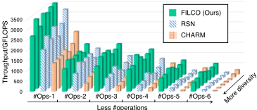
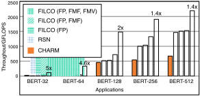
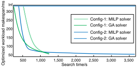
To evaluate the FILCO adaptability under diverse workloads and showcase the effectiveness of design methodology, we apply the FILCO framework to a series of BERT models: BERT-32, BERT64, BERT-128, BERT-256, and BERT-512. As shown in Figure 10, we evaluate three FILCO designs with different enabled features. For the small BERT applications, limited by a low CTC ratio, the communication time dominates the end-to-end throughput. Since RSN and CHARM are not able to adjust the tile size in one memory unit, data padding induces wasteful bandwidth utilization. FILCO (FP, FMF) and FILCO (FP) are also inefficient, as they load many padded operand matrices, incurring significant communication overhead. While FILCO (FP, FMF, FMV) can efficiently handle it since FMUs can flexibly adjust the buffer view to perfectly match the small matrices without data padding. In the large BERT applications, CHARM and RSN can achieve a relatively high efficiency. However, since RSN does not explore the design space for diverse parallelism patterns, and the functionalities of on-chip memory are fixed before compilation time, this leads to a sub-optimal design point. After enabling these features, FILCO can achieve better design points compared with RSN and CHARM.
我们通过评估搜索时间来展示所提出的基于混合整数线性规划（MILP）和遗传算法（GA）的设计空间探索（DSE）方法的效率与可扩展性。如图 11 所示，我们在两个任务集下比较了 MILP 和 GA 的搜索时间。Config-1 表示一个包含 50 层、每层 50 个候选的工作负载，而 Config-2 是一个包含 50 层、每层 5000 个候选的工作负载。在小任务集中，GA 算法以比 MILP 更快的收敛速度获得了近优解，最优性差距仅约 3%。在大任务集中，GA 能够在 10 分钟内产生一个良好的设计点，而 MILP 即使运行一小时后仍无法获得有效解。因此，对于小型工作负载，FILCO 可以使用所提出的 MILP 形式化建模获得最优调度方案。对于更大的工作负载，FILCO GA 能够以显著更短的搜索时间提供近优解，展现出强大的效率和可扩展性。
现有工作在探索面向多样化工作负载的硬件效率方面存在两大趋势：固定数据流加速器 [6, 8, 10, 11, 14, 15, 17, 18, 30, 31, 33, 35, 37] 和基于覆盖网（overlay）的加速器 [1, 12, 22, 24, 28, 32]。固定数据流加速器在静态且多样性较低的场景中效率较高，因为它们必须为每种可能的执行模式显式地考虑数据通路，从而带来大量开销和资源利用不足。CHARM [35] 设计了一种具有两种多样性的加速器，但当硬件与工作负载不匹配时仍需要额外的数据填充。DNNExplorer [33] 设计了一种流水线通用的混合架构，其同样固定了数据通路，并未缓解上述问题。SSR [37] 和 EQViT [10] 受其执行模式的限制，无法处理模型规模较大的应用。FlightVGM 和 FlightLLM [18, 31] 在除大语言模型（LLM）之外的应用上会出现性能下降。Herald [17] 提供了粗粒度的灵活性，而以空间方式实现加速器在批数量较小时会导致性能下降。
存储器管理是提升硬件利用率的关键。GraDMM [25] 提出了一种面向基于高层次综合（HLS）的现场可编程门阵列（FPGA）的动态存储器管理库。在片上技术之外，若干工作 [7, 20, 27, 29] 将加速器的存储层次扩展至片外动态随机存取存储器（DRAM）与存储系统，以应对模型规模的快速增长。其他工作 [9, 13, 36] 还探索了面向生产力的编程抽象。我们认为这些方向与 FILCO 互补，并将其留作未来工作。
基于覆盖网的加速器设计了灵活的数据通路，并采用基于令牌的控制，从而为多样化工作负载启用不同的数据通路。InTAR [12] 设计了运行时固定的数据通路，每个处理单元（PE）的功能无法重新配置。FEATHER [22] 主要关注数据布局重排。NSFlow [28] 受片上存储器管理的限制，因为 PE 与片上存储器之间的数据流在运行时是静态的。RSN [24] 在一定程度上缓解了该问题，但其计算并行度是静态的，且片上存储器管理不够灵活，由于计算利用不足和通信开销而造成较大的性能下降。
本文提出了 FILCO 架构与框架，提供了一种灵活的组合架构，能够在差异巨大的各类工作负载上有效提升硬件效率。我们将在未来的工作中继续在更多样化的场景中探索 FILCO。致谢 - 本工作部分受到布朗大学新教师启动基金以及美国国家科学基金会（NSF）项目 #2140346、#2231523、#2441179、#2348306、#2511445、#2518375、#2536952 的资助。我们感谢 AMD 捐赠的硬件与软件。
FILCO：面向 DNN 加速、具备实时可重构性的灵活组合架构